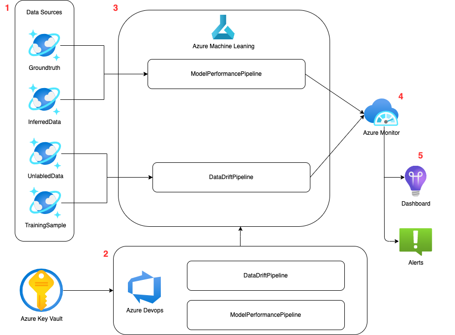

1 Model Performance and Data Drift Monitoring
1.1 Introduction
Monitoring models in production is crucial to detecting model performance degradation early on and ensuring that the model’s predictions remain reliable over time. Two ways to achieve this are data drift detection and model performance monitoring.
Data drift detection is an unsupervised task that involves comparing a sample of the data the model was trained on to new data batches that are sent to the model for inferencing. This comparison helps to identify changes in the distribution of inputs, which may lead to a decline in the model’s performance.
On the other hand, model performance monitoring is a supervised task that involves comparing the model’s output to the ground truth. This task is useful in identifying changes in the model’s behavior when the ground truth is available.
It is important to note that maintaining a data drift detector even when the ground truth is available has two benefits. Firstly, it can detect changes earlier than relying solely on the ground truth. Secondly, it helps to understand the cause of model degradation even when the ground truth is available.
1.2 The Use Case
In the provided template, we assume the model will be using tabular data with ontinuous and categorical variables.
1.3 Requirements
The solution requires that Azure ML and Azure Devops instances will be available in the production environment.
1.4 Before Deploying a Model
When a model is ready to be pushed to production, it will be the data scientists’ responsibility to provide the code required for monitoring, by altering the provided monitoring template (see the Monitoring Template section of this document for more details).
1.5 Monitoring Design
The monitoring workflow is depicted in the image below. The document assumes that all the required data is stored in Cosmos DB and readily available for use.

1.5.1 Data Sources
The monitoring tool uses four data sources in order to run the pipelines: * GroundTruth: contains the actual labels of the inferred data. This data will only be available after providing the model’s predictions, and will be used to evaluate the performance of teh model. * InferredData: contains the predictions made by the ML model * UnlabledData: contains the new data that needs to be inferred by the model * TrainingSample: a sample of the training set (copied from the TRE)
1.5.2 Azure Pipeline
The Azure Pipelines will trigger the AML pipelines when new data becomes availabe, or on a predefined schedule. The Azure pipeline receives all the environment variables required to run Azure ML (such as subscription ID, client ID etc.)
1.5.3 Azure Machine Learning
In Azure ML, we will have two pipelines - one for model performance monitoing and another one for drift detection.
1.5.3.1 Model Performance Pipeline
Inputs: model predictions and their corresponding ground truths (when they become available) The script will compute the model’s performance by comparing the predictions that were made by the model to the ground truth.
1.5.3.2 Data Drift Pipeline
Inputs: A sample of the training data, a set of new data Output: For each feature, the script will determine whether a data drift occurred or not.
In this example, we used the alibi-detect open source library to compute the data drift, but the data scientist can decide on the best monitoring tools based on the use case [^1] [^1]: For images, we could also use Torchdrift or theDeepchecks open source library
If we would also like to support label drift, in addition to the training set, we will also need to save the predictions the model made on the training data so that we can compare the distribution of the predictions.
The pipelines record the selected metrics and graphs using MLFlow and also send metrics to Azure Monitor
1.5.4 Azure Monitor
In Azure Monitor, we will define queries and use them to set alerts and create dashboards. The alerts can be linked to email accounts (or to a Teams channel) of the data scientist responsible for the model. When an alert is triggered, the data scientist can view the monitoring dashboard to get some more information about what has trigerred it.
1.6 Monitoring Template
The monitoring template is meant to help the data scientist create the artifacts required to run the monitoring workflow. To setup the workflow, the data scientist will need to follow the following steps:
1.6.1 Step 1: Define the drift and model performance metrics
In the data_drift and model_performance folders, edit the source code (e.g data_drift/data_drift_src/data_drift.py) to define the monitoring functions. * For data drift, the template supports running Kolmogorov-Smirnov algorithm for all continuous variables and Chi-squared tests for all categorical variables. ### Step 2: Configure the data paths and compute Change the config.json file to point to the location of the data sources and to select the compute name (the assumption is that a compute has already been created in AML) ### Step 3: Create a client application In order for Azure Pipelines to trigger AML, you will need to create a client application in Azure and add a client secret. ### Step 4: Configure Azure DevOps * Start a new Azure DevOps project, connect it to the template repo , and create a new piplie using the azure-pipelines.yml yaml file (see this link for more details). * Link Azure DevOps to Azure KeyVault and define the following environment variables: * Azure_Client_ID: the ID of the client appliaction * AZURE_CLIENT_SECRET: the secret of the client application * AZURE_LOG_HANDLER_CONNECTION_STRING: connection string used to log metrics to Azure Moniring (see here for more details) * AzureML_Workspace_name: the name of the AML workspace where the experiments will be ran * Resource_Group: the name of teh resource group * Subscription_ID: the user’s subscription ID * Tenant_ID: the tenant ID ### Step 5: Run the pipeline When the run completes, the artifacts will be stored in the AML run.
The logs that were saved to Azure Monitor are stored in the traces table. They can be queried using Kusto Query Language (KQL)
For example, run the following query to detect if a drift has occurred:
traces
| where message == 'data_drift_total'
| project toreal(customDimensions.is_drift)These queries can be used to create alerts and add tiles to Azure dashboards
1.7 TBD
- How to read data from Cosmos DB to Azure blob storage? what should the query look like?
- When to trigger the pipelined -
- whenever there is a change in Cosmos DB datasets
- at pre-defined intervals